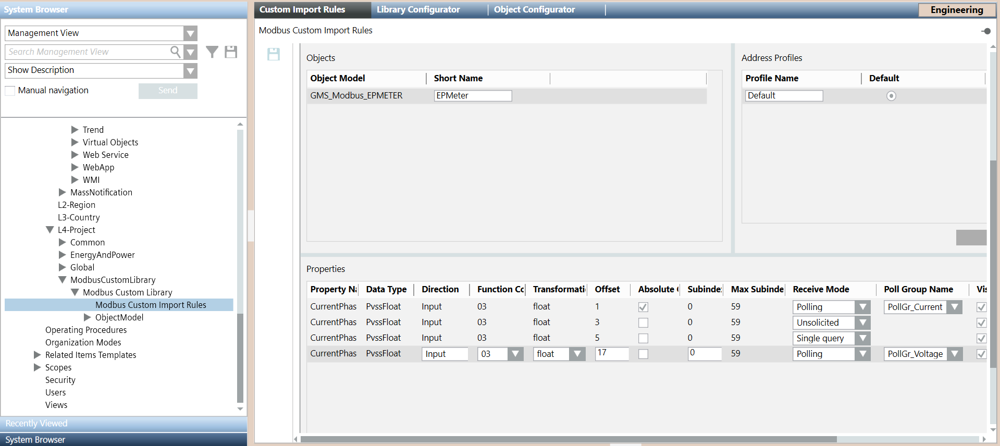
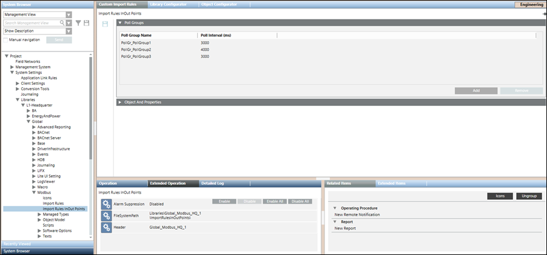
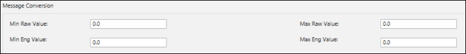

Custom Import Rules
Import rules serve as mapping between the Engineering data and the Object Model configuration parameters in the management station. This requires creation of an instance of GMS_MODBUS_CustomRules in your library.

After the instance is created, the Import Rules editor displays.

The Object Model GMS_MODBUS_EPMeter appears in the Import Rules list as it is imported using a CSV file and the Managed Type of the object model is set to ModbusPredefinedDevice. This information is used by the Import Rules editor to list the custom defined object models.
Impact of Customization
When you add an object model name or short name for an OM in the CSV file, the import rules are set in the order specified by standard library customization behavior. However, if you customize the OM at a level different than the level of the import rules, the behavior of the importer will be different.
For example, the import rules can be defined at a higher level (for example, L3-Country), whereas the OM is customized at lower level (for example, L4-Project). In this case, if you specify the short name for such a rule in the instance CSV file, the object model attributes (using the customized OM) are taken from a lower level (L4-Project), but the address configuration is set from the import rules at a higher level (L3-Country).
Poll Groups Expander
Allows you to define poll groups along with the poll interval.

Poll Groups | |
| Description |
Poll Group Name | Specify the name for the poll group. The name of the poll group must begin with the following mandatory prefix: PollGr_. The poll group is not created in the system if the prefix is missing. |
Poll Interval | Specify a time interval for the poll group |
Add | Adds a new row for a poll group entry |
Remove | Removes an existing poll group entry |

NOTE:
Click Save to save the poll group entry in the custom import rules.
to save the poll group entry in the custom import rules.
Objects and Properties Expander in Custom Import Rules
The Objects and Properties expander allows you to configure the properties associated with each selected object model.
Objects and Properties Expander: Objects
Objects Fields | |
| Description |
Object Model | Displays the custom Modbus object models as imported in the custom library. |
Short Name | Allows you to type the alias of the object model. |
Objects and Properties Expander: Address Profiles
You can create multiple address configurations for an object model by creating multiple address profiles. Multiple address profiles are required to support multiple address configurations through which you can configure multiple instances of a device.
After creating the address profiles, you may provide the address configurations for these profiles from the Properties section. You can also have empty address configurations for any of the properties of the object model. You can set one of the address profiles as the default profile. When importing the CSV file, the address configuration of the default profile can be associated with the object model that does not have an address profile associated with it.
Address Profiles Fields | |
| Description |
Profile Name | Address profile for the selected object model. |
Default | Allows you to select the address profile that is to be set as the default profile. When importing a CSV file that does not have an address profile associated with an object model, the importer will use the address configuration of the default address profile during import. |
Add | Allows you to create a new address profile. |
Remove | Removes an existing address profile. |
Objects and Properties Expander: Properties
Properties Fields | |
| Description |
Property Name | Displays the name of the property of the selected object model. |
Data Type | Displays the data types of the selected property. |
Direction | Allows you to select the direction. |
Function Code | Allows you to select a function code for the selected data type and direction. |
Transformation Type | Allows you to select any transformation type irrespective of the selected datatype. This directly modifies the step size (in bits/bytes) with subIndex increments. |
Allows you to type the offset. It can be a four digit numeric value. NOTE: | |
Absolute Offset | If the Absolute Offset check box is selected, the values of the offset and subindex are derived from the import rules. However, if the Absolute Offset check box is not selected, the values in the Offset and SubIndex fields are calculated as the sum of the offset and subindex values from the CSV file and the import rules. |
SubIndex | Allows you to enter the subindex within the valid range of subindex starting from 0. Subindex cannot be a negative number. |
Max SubIndex Limit | Displays the maximum allowable subindex value. |
Receive Mode | Allows you to set the Receive Mode for a property. Receive mode can only be assigned to data points with the Input or In/Out direction. You can set the Receive Mode to any one of the following:
If you select an empty or blank space, the Receive Mode is set to Single Query by default. |
Poll Group Name | Allows you to specify a pollgroup for the specific property. Can only be assigned to data points of direction Input and to the Value property of InOut points. NOTE: Poll Group Name is visible only if the Receive Mode is set to Polling. |
Visibility | Select the Visibility check box if you want the property of the selected object model to be displayed in the Operations and Extended Operations tab. By default, this check box is selected, however, if you do not want to display this property, you must deselect this box. |
Low Level Comparison | The Low Level Comparison check box is applicable for only those properties with the Direction field set to Input. By default, it is unchecked. If this box is selected, then the driver sends the data only in case of changes. |
NOTE:
In order to provide a blank address configuration during import for a specific property, you can specify blank values to function code, direction, and transformation type fields of that property in the custom import rules of the object model. However, you must ensure that if a blank value is specified for one field of the property, then the other property fields must also be blank.
Maximum Allowable SubIndex for Data Type and Function Code | ||||
Transformation Type (PVSS) | Direction | Function Code | Code Meaning | Maximum SubIndex |
boolean | Input | 1 | Read Coils | 1919 |
boolean | Input | 2 | Read Discrete Inputs | 1919 |
boolean | Input | 3 | Read Holding Registers | 1919 |
boolean | Input | 4 | Read Input Registers | 1919 |
boolean | Input | 7 | Read Exception Status | 7 |
boolean | Input | 23 | Atomic Read/Write | NA |
boolean | In/Out | 23 | Atomic Read/Write | NA |
boolean as byte | Output | 5 | Write Single Coil | 0 |
boolean | Output | 6 | Write Single Register | 15 |
boolean | Output | 15 | Write Multiple Coils | 1919 |
boolean | Output | 16 | Write Multiple Registers | 1919 |
boolean | Output | 23 | Atomic Read/Write | NA |
int16 | Input | 3 | Read Holding Registers | 119 |
int16 | Input | 4 | Read Input Registers | 119 |
int16 | Input | 23 | Atomic Read/Write | NA |
int16 | In/Out | 23 | Atomic Read/Write | NA |
int32 | Input | 3 | Read Holding Registers | 59 |
int32 | Input | 4 | Read Input Registers | 59 |
int32 | Input | 24 | Read FIFO Queue | 59 |
int32 | Input | 23 | Atomic Read/Write | NA |
int32 | In/Out | 23 | Atomic Read/Write | NA |
int64 | Input | 3 | Read Holding Registers | 29 |
int64 | Input | 4 | Read Input Registers | 29 |
int64 | Input | 24 | Read FIFO Queue | 29 |
int64 | Input | 23 | Atomic Read/Write | NA |
int64 | In/Out | 23 | Atomic Read/Write | NA |
uint16 | Input | 3 | Read Holding Registers | 119 |
uint16 | Input | 4 | Read Input Registers | 119 |
uint16 | Input | 23 | Atomic Read/Write | NA |
uint16 | In/Out | 23 | Atomic Read/Write | NA |
uint32 | Input | 3 | Read Holding Registers | 59 |
uint32 | Input | 4 | Read Input Registers | 59 |
uint32 | Input | 24 | Read FIFO Queue | 59 |
uint32 | Input | 23 | Atomic Read/Write | NA |
uint32 | In/Out | 23 | Atomic Read/Write | NA |
uint64 | Input | 3 | Read Holding Registers | 29 |
uint64 | Input | 4 | Read Input Registers | 29 |
uint64 | Input | 24 | Read FIFO Queue | 29 |
uint64 | Input | 23 | Atomic Read/Write | NA |
uint64 | In/Out | 23 | Atomic Read/Write | NA |
int16 | Output | 6 | Write Single Register | 0 |
int16 | Output | 16 | Write Multiple Register | 119 |
int16 | Output | 23 | Atomic Read/Write | NA |
int32 | Output | 16 | Write Multiple Register | 59 |
int32 | Output | 23 | Atomic Read/Write | NA |
int64 | Output | 16 | Write Multiple Register | 29 |
int64 | Output | 23 | Atomic Read/Write | NA |
uint16 | Output | 6 | Write Single Register | 0 |
uint16 | Output | 16 | Write Multiple Register | 119 |
uint16 | Output | 23 | Atomic Read/Write | NA |
uint32 | Output | 16 | Write Multiple Register | 59 |
uint32 | Output | 23 | Atomic Read/Write | NA |
uint64 | Output | 16 | Write Multiple Register | 29 |
uint64 | Output | 23 | Atomic Read/Write | NA |
float | Input | 3 | Read Holding Registers | 59 |
float | Input | 4 | Read Input Registers | 59 |
float | Input | 23 | Atomic Read/Write | NA |
float | In/Out | 23 | Atomic Read/Write | NA |
float | Output | 16 | Write Multiple Register | 59 |
float | Output | 23 | Atomic Read/Write | NA |
double | Input | 3 | Read Holding Registers | 29 |
double | Input | 4 | Read Input Registers | 29 |
double | Input | 23 | Atomic Read/Write | NA |
double | In/Out | 23 | Atomic Read/Write | NA |
double | Output | 16 | Write Multiple Register | 29 |
double | Output | 23 | Atomic Read/Write | NA |
blob | Input | 3 | Read Holding Registers | NA |
blob | Input | 4 | Read Input Registers | NA |
blob | Input | 23 | Atomic Read/Write | NA |
blob | Output | 16 | Write Multiple Register | NA |
blob | Output | 23 | Atomic Read/Write | NA |
blob | In/Out | 23 | Atomic Read/Write | NA |
string | Input | 3 | Read Holding Registers | NA |
string | Input | 4 | Read Input Registers | NA |
string | Input | 23 | Atomic Read/Write | NA |
string | In/Out | 23 | Atomic Read/Write | NA |
string | Output | 16 | Write Multiple Register | NA |
string | Output | 23 | Atomic Read/Write | NA |
MOD 10 Size 2 | Input | 3 | Read Multiple Registers | 0 |
MOD 10 Size 3 | Input | 4 | Read Input Registers | 0 |
MOD 10 Size 4 | Output | 16 | Write Multiple Registers | 0 |
NOTE: The function code 23 is only used for atomic write/read operation, which means that a read operation is always combined with a write operation. Therefore, Polling or Single Query mode are not supported by these addresses.
The receive mode is always Unsolicited because the read operation is a consequence of the write operation.
Objects and Properties Expander: Message Conversion
You can modify the message conversion parameters for properties of custom object models. The message conversion section is available only for properties of type, PvssInt, PvssUint, PvssFloat, GmsInt, GmsUnit, and GmsReal.
After importing the CSV file, the message conversion values applied to the custom object model property display in the Value Conversion section in the Object Configurator on selecting the property.

Message Conversion Fields | |
| Description |
Min Raw Value | Lower end of the raw value scale |
Max Raw Value | Upper end of the raw value scale. This value must be greater than Min Raw Value. |
Min Eng Value | Lower end of your engineering value scale |
Max Eng Value | Upper end of your engineering value scale. This value must be greater than Min Eng Value. |